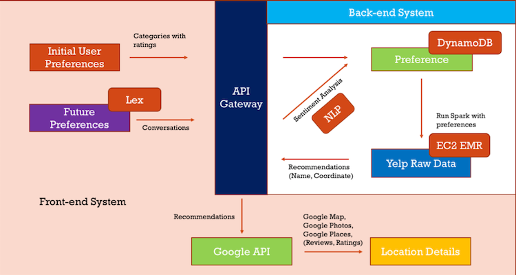
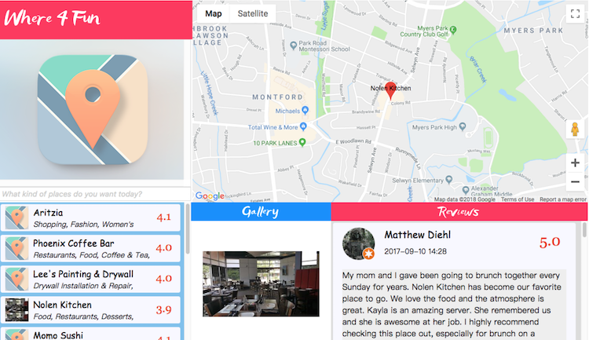

Where4Fun
A web application which accesses 10+ AWS tools to provide users with recommendations on nearby places & spots based on their ratings and preferences. It also supports functions including text message notification, voice control, smart album, etc.
 Tech Skills
Technology Stack: Spring, AWS, Android, Spark, REST, MapReduce, Hadoop, Kafka, jQuery, Git, Hibernate, MySQL, JDBC, Linux.
Programming: Java, Python, C, C++, JavaScript, HTML, SQL, Scala, PHP, CSS.
Working Experiences
Amazon.com, Seattle, WA
Software Development Engineer Intern at AFT - Amazon Fulfillment Technologies.
Hwadee Information Technology Co., Ltd., Chengdu, China
Software Developer Intern worked on “Campus Market” - An Android App for online shopping which held 3000+ student users.
Unisstorage System Co., Ltd., Beijing, China
Software Analyst & Designer Intern worked on “Caring Monitors” - An intelligent web system for kindergarten monitoring which helps teachers and parents take good care of children.
Contact Information
Email: yq791@nyu.edu